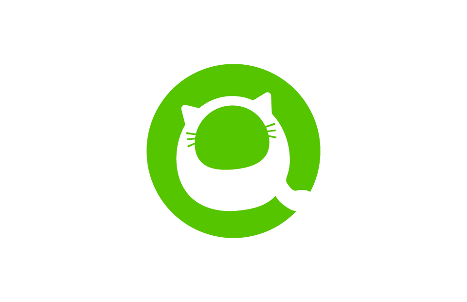

埼玉西武ラインオンズ
昔、西武池袋線沿いに住んでいたこともあり良く試合観戦に足を運んでいました。 今でもたまに現地観戦します！また現地観戦出来ずともシーズン中は毎日ネット 中継で欠かさず試合観戦しています。写真はTwitter APIを利用してある日時のTweet Data（#seibulions含む） から作成したword cloudです。noteでは定期的に野球ネタを書いています。将来的にデータ分析と機械学習を軸とした IT技術と野球を繋ぐような何かをしたいと密かに画策中。